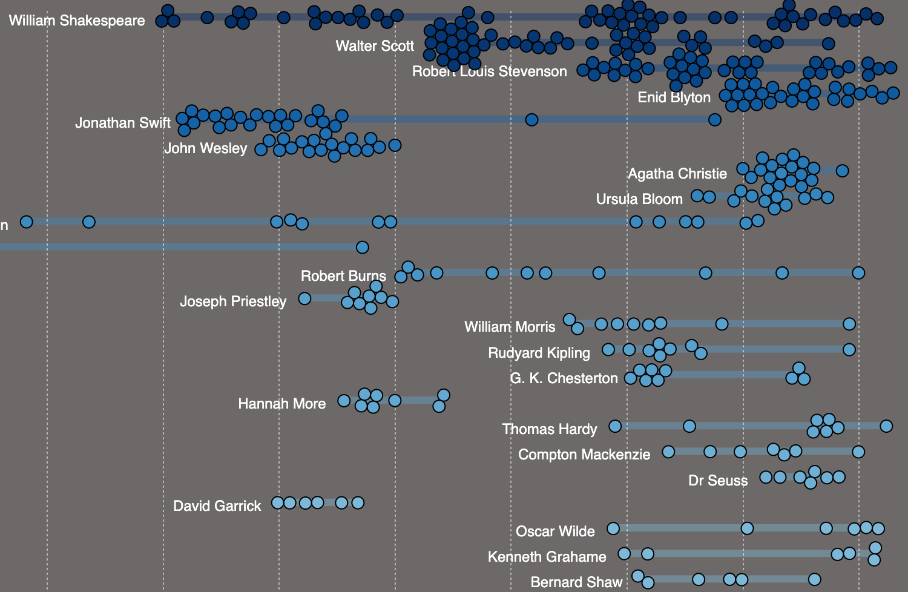
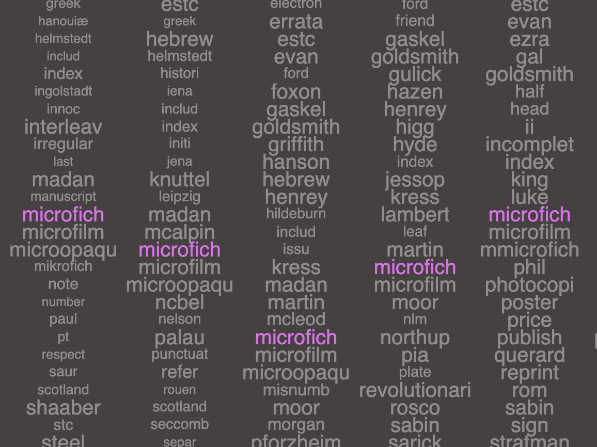

Visualising the National Library's Archive of Publications
Welcome to the National Library of Scotland Publication Data Visualization project. This project aims to explore and provide insights into the vast collection of bibliographic records from the National Library of Scotland's archive. By visualizing this data, we aim to enhance accessibility and promote exploration of the rich cultural heritage contained within. The dataset is available to download here.
The following visualizations are made using a sample dataset comprising 100,000 records from the National Library's archive. Happy exploring!

Beeswarm
Click on the image to explore authors, poets and writers, some of which you may recognise, whose records help to form this vast dataset. The Beeswarm visualization allows for the discovery of all authors, with insights into various publishing pattern over the past 500 years.

Vertical Word Cloud
Click on the image to explore the dataset based on different fields and changes of frequencies over time. The Vertical Word Cloud visualization enables exploration of the dataset through different fields such as description, subject, and creator, offering insights into changes over time.